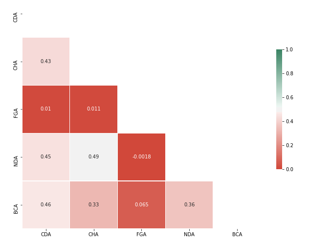

This work was developed in 10 days: 03/12 - 11/12. I used ASANA for project management. The Gantt chart of this workflow is shown below
The detailed task in each group are list in the tables below.
| Data Collected | Data Cleaning | Database |
|---|---|---|
| Dowload dataset | Separate all information by country | Create public database on AWS |
| Select features | Handle missing values | Python to MySQL |
| Separate the sheets corresponding to the features | Export to .csv | AWS integration with Power BI |
| Export to .csv |
| Machine Learning | EDA & Power BI | Website Construction & Deploy |
|---|---|---|
| Time series for CDA | Report Overview | Homepage |
| Time series for CHA | Report for each feature with year slice | Technical development page |
| Time series for FGA | Report 2020 vs 2027 | Conclusions page |
| Time series for NDA | Pairplot | Deploy website AWS |
| Time series for BCA | Correlation heatmap | |
| Correction limits | Report EDA analysis | |
| Export predicted dataframe to .csv | ||
| Export complete dataframe to .csv | ||
| Upload both datasets into public database |
Pipeline

Machine Learning
We have 26 years of data for each of the 119 countries and we need to forecast the values of each feature for another 7 years. So for that, I first separated the dataset into a list with 119 elements, in which each element corresponds to a country.
Then I went through the list, feature by feature, and used Autoregression for the forecast. I saved the complete data set in a new list with 119 elements (countries) and now with 33 years of information for each feature. Finally, I gathered all the elements in a final dataset and uploaded it into the public database generated for this project.
Autoregression is a time series model that uses observations from previous time steps as input to a regression equation to predict the value at the next time step. In this dataset I use 3 previous observations to build the model prediction.
The libraries used in feature engineering and machine learning were:
import pandas as pd
import numpy as np
import re
from statsmodels.tsa.ar_model import AR
import datetime
Exploratory Data Visualization
The libraries used for exploratory data analysis (EDA) were:
import seaborn as sns
import matplotlib.pyplot as plt
The first thing to do in order to visualize all the features together is a pairplot graph and it is shows below.
 Unfortunately the pairplot doesn't give us a clear relation between features. The best way to get some information is through a correlation heatmap. As we can see in the graph on the side, the most strong correlations are between:
- CHA and NDA
- CDA and BCA
- CDA and NDA
- CDA and CHA
- NDA and BCA
- CHA and BCA
Let's go deeper into these relations in the report below. Analyzing the 26 years of data for all countries, the features that have the highest correlation are CHA and BCA, that is, the growth rate of methane and black carbon are directly related. Then we see that there is also a strong relationship between CHA and NDA, that is, the growth rate of methane and N2O are directly related. In addition to these, two other features that are directly related are CDA and CHA, which are the growth rates of CO2 and methane.